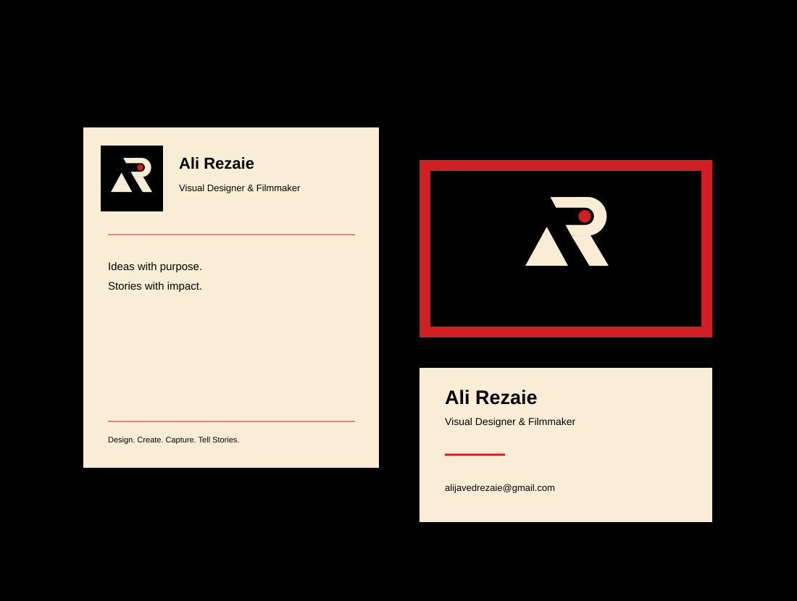

Every frame. A story.
A cinematic title-card exploration of framing, typography and the brand’s signature entrance.
View projectExplore photography, videos, graphic design, web projects and UI/UX. Choose a discipline below to discover the work.
Portraits, places and stories captured in a single frame.
A selection of photography will be shared here.
Film, visual storytelling and motion explorations.
A cinematic title-card exploration of framing, typography and the brand’s signature entrance.
View projectBrand identities and print systems with a clear visual direction.

A visual identity connecting design and filmmaking through a logo, color palette and brand guidelines.
View project
Business cards and stationery that carry the visual identity into tangible everyday materials.
View projectResponsive websites that bring a visual identity online.

A responsive portfolio that brings the brand online and makes project inquiries straightforward.
View projectInterfaces and experiences shaped around the people using them.
UI and UX case studies will be shared here.
Personal projects and concept studies are labeled throughout.
Tell me what you have in mind. We’ll find the right way to bring it to life.